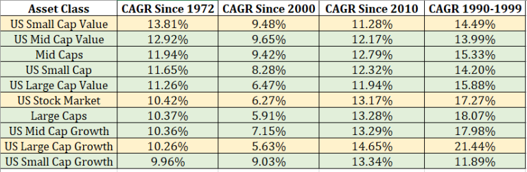
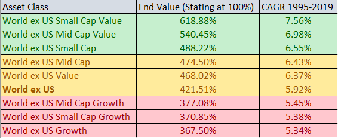
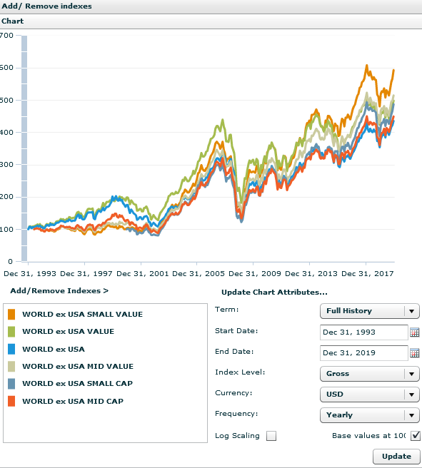

פורסם בתאריך 21.4.2020, עודכן בתאריך 5.10.2020
התכנים בפוסט זה, כמו כל שאר התכנים בבלוג, הינם תכנים לימודיים במהותם, הם אינם מהווים ייעוץ או המלצה לביצוע פעולה בנייר ערך, ואין לראות בהם תחליף לייעוץ השקעות ו/או ייעוץ פנסיוני המתחשב בצרכיו הייחודיים של כל אדם.
לגרסא עדכנית יותר של הפוסט לחצו כאן.
האם פקטור הגודל ופקטור הערך יכולים לייצר לנו תשואות עודפות לאורך זמן על פני תשואת כלל השוק? בקצרה כן, אבל בתנאים מסוימים. המשיכו לקרוא לקבלת התמונה המלאה.
קצת רקע על פקטור הגודל והערך והאם הם עדיין רלוונטיים
רבות דובר על תחום הפקטורים והנושא נידון בין היתר אצל הסולידית, אצל Ben Felix ואחרים. הפקטורים הם פרמטרים ייחודיים המבחינים קבוצות מניות מסוימות, ולאורך השנים נבחנו אותן קבוצות מניות אל מול מדד השוק הכולל (Weighted Average Total Market), ובחנו את התשואה והסיכון שלהם לטווח הארוך. שני הפקטורים הידועים הם פקטור הגודל והערך, ששנים ארוכות של סטטיסטיקה הראו תשואה עודפת באופן מובהק סטטיסטית לשני הפקטורים האלה על פני תשואת כלל השוק. בעבר חשבו שהם מייצרים alpha, כלומר תוספת תשואה "בחינם", אך מחקרי המשך גילו כי אין ארוחות חינם, והתשואה העודפת מגיעה בעקבות סיכון גבוה יותר (כאשר משקיעים בפיזור רחב באותם פקטורים, הכוונה במילה "סיכון" היא לתנודתיות גבוהה יותר, אבל לא לחשש מאובדן מוחלט של הכסף).
פקטור ה-size מוגדר בספרות האקדמית כ-SMB (Small Minus Big) והוא מראה שמניות קטנות (בעלות שווי שוק נמוך) משיגות תשואה גבוהה יותר לטווח הארוך ממניות גדולות (בעלות שווי שוק גבוה).
פקטור הערך מוגדר בספרות האקדמית כ-HML (High Minus Low) והוא מגדיר כי חברות שהרווחיות שלהן בספרים גבוהה ביחס למחירן הנוכחי (זה בעצם יחס הפוך למדדים כמו price/earnings, price/book ואחרים, כלומר מכפילים נמוכים), משיגות תשואות גבוהות יותר לטווח הארוך ממניות עם יחס נמוך בין הרווחיות למחיר המניה (כלומר מכפילים גבוהים). אחת הסיבות לכך היא במשקל העודף שהציבור והמשקיעים המוסדיים נותנים לחברות הגדולות והמגניבות, ונוטים להעריך בחסר מניות שפחות מציתות את הדמיון.
המניות "ההפוכות" למניות ערך מוגדרות כמניות צמיחה (Growth) – כלומר מניות שצופים עבורן צמיחה גבוהה מהממוצע. בעצם לא מדובר פה בדיוק על הפכים מוחלטים (כמו מניות גדולות מול קטנות), אלא יש כל מיני מאפיינים שאופייניים למניות צמיחה ומאפיינים שאופייניים למניות ערך. בגלל המצב הזה יש כאן הרבה מקום לשיקול דעת – אילו מאפיינים לקחת, איזה משקל נותנים לכל אחד, כמה אחורה מודדים אותם (למשל האם למדוד את ה-price/earnings בשנה האחרונה, ב-3 שנים האחרונות או ב-5 שנים האחרונות וכו'). כשיש מקום לשיקול דעת, עצם החלוקה בין סוגי המניות נכנס למחוזות ההשקעה האקטיבית. יחד עם זאת, קיימים מדדים וקרנות של מניות ערך או מניות צמיחה, אשר הגדירו נוסחא לניקוד כל מניה לפי מאפייני ה-Value/Growth ומיינו אותן על ציר. כך ניתן להפריד אוטומטית, וללא שיקול דעת, בין המניות שהן מניות ערך מובהקות, לבין מניות שהן מניות צמיחה מובהקות, ולבין מניות שהן לא מובהקות לשום כיוון. כשיש נוסחא וכללים ברורים, ואין שיקול דעת למנהל הקרן, זו בעצם השקעה פאסיבית לכל דבר ועניין.
כמובן שניתן להגדיר את הנוסחא בדרכים אחרות (למשל להקצות משקלות שונים לפרמטרים), אבל גם אם שתי קרנות/שני מדדים יגדירו נוסחאות שונות, שמצידן יגדירו חלוקה קצת שונה של המניות לקבוצות, סביר להניח שהחלוקה תהיה מאוד קרובה, ובפיזור על פני מאות/אלפי מניות אין לכך כמעט משמעות – שני המדדים/הקרנות צפויים להשיג תשואה כמעט זהה לאורך זמן.
מקובל לומר שמדדי מניות רחבים כוללים שילוב (Blend) של מניות ערך ומניות צמיחה, בחלוקה שווה פחות או יותר. המשקל של מניות קטנות במדדים הרחבים הוא פחות מ-10%, בגלל שהמדדים בנויים לפי שווי שוק ונותנים משקל גבוה מאוד למניות עם שווי השוק הגדול. שני הפקטורים הללו מגדירים את החלוקה המקובלת ל-Asset Classes, לפי ה-Grid המתייחס לציר ה-Market Cap (Large, Medium, Small) ולציר ה-Style (Value/Growth/Blend). נוכל לקחת כדוגמא את ה-Grid של הקרן הפופולרית VT, שעוקבת אחרי מדד FTSE Global All Cap Index, שמהווה one stop shop לכל העולם כולו (כל השווקים – מפותחים ומתפתחים כאחד, מניות בכל הגדלים, ושילוב של מניות צמיחה ומניות ערך).
בציר ה-Style יש לנו Blend ובציר ה-Market Cap מסומן Large, מהסיבה הפשוטה שהמניות הגדולות מקבלות את מרבית המשקל (כ-80%) במדדים שכוללים מניות מכל הגדלים (ועוד בערך 10% למניות בינוניות ו-10% נוספים למניות קטנות).

מה היתרון לפקטור הגודל והערך לאורך השנים, ובפרט בתקופה האחרונה
המידע על הפקטורים האלה כולל סטטיסטיקה ארוכה של כמעט 100 שנה (בשוק האמריקאי בלבד, יש סטטיסטיקה הרבה יותר קצרה בשוק הגלובלי – עוד על כך בהמשך), והנתונים מראים יתרון של 1.9% אחוז לשנה לפקטור הגודל, ו-3.7% לשנה לפקטור הערך. יחד עם זאת, ב-35 השנים האחרונות לא היה הבדל בין מניות גדולות לקטנות, וב-14 השנים האחרונות מניות הערך דווקא פיגרו אחרי מניות הצמיחה בכ-3.6%.

רבים טוענים שהסיבה לביצועי החסר של מניות הערך, או לכך שכבר זמן רב אין תשואה עודפת למניות קטנות על פני הגדולות, היא שמאז שפורסמו מחקרים בנושא ומשקיעים הפכו להיות מודעים אליהם, אז הפרמיה שלהם על כלל השוק כבר לא קיימת, או לפחות לא צפויה להיות גבוהה כבעבר, וזה אכן תרחיש אפשרי. בן פליקס למשל לא מסכים עם הקביעה הזו, ומציין שכמו שבעבר היו תקופות ארוכות שתשואת האג"חים היתה גבוהה מהמניות, כך גם היו תקופות ארוכות של ביצועי חסר למניות ערך, אבל אין להסיק מכך לגבי התשואות לטווחים יותר ארוכים.
סיבה אפשרית נוספת לכך שכבר אין פרמיה בולטת לשני הפקטורים הללו היא שגם היסטורית בתקופות של שוק שורי חזק (ואולי אף בועתי), השוק מובל ע"י מניות הצמיחה הגדולות (כמו מניות הטכנולוגיה ה"סקסיות"), אבל בתקופות שאינן שוק שורי חזק במיוחד (שוק שורי עם תשואות "נורמליות" שקרובות לממוצע הרב-שנתי, שוק שורי חלש, שוק מדשדש או שוק דובי), שם הפרמיות של גודל וערך באות במיוחד לידי ביטוי. כיוון שב-30 השנים האחרונות היו שני עשורים של שוק שורי חזק (1990-1999 ו-2010-2019) ובתווך עשור אחד דובי (2000-2009), אז התוצאות אכן נותנות יתרון למניות הגדולות ומניות הצמיחה, על פני מניות הערך והמניות הקטנות.
הסבר נוסף הוא שהניתוח של כל פקטור בנפרד לא מציג את כל התמונה. אם נכנסים מעט יותר לעומק ומנתחים את שני הפקטורים ביחד (כלומר את 9 הקוביות ב-Grid), מגלים כי היתרון המרכזי בא לידי ביטוי בשילוב שני הפקטורים, כלומר ב-Asset Classes של Small Cap Value ו-Mid Cap Value, כפי שמשתקף בטבלה שלהלן:

הטבלה מראה ש-Small Cap Value ו-Mid Cap Value השיגו, החל מ-1972, תשואה עודפת משמעותית על התשואה הכוללת של השוק האמריקאי (3.5% ו-2.5% בהתאמה). לעומת זאת Small Cap Growth ו-Mid Cap Growth משיגים תשואה דומה לתשואת כלל השוק ואף מעט נמוכה יותר, ובעצם "גוררים אחורה" את ה-Small Cap וה-Mid Cap (שמכילים גם Value וגם Growth). לעומת זאת, בעשורים 1990-1999 ו-2010-2019, בהם היה שוק שורי חזק, ה-Small/Mid Cap Value השיגו תשואה נמוכה משמעותית מכלל השוק, ומה-Large Cap Growth בפרט.
אז החלטתי לבדוק את העניין קצת יותר לעומק ולהסתכל על פרקי זמן של 20 שנה החל מ-1972 באמצעות הכלי המצוין portfolio visualizer, כיוון שהסתכלות על עשור ספציפי, או על תזמונים מאוד מסויימים, יכולה לעוות את המציאות. הטבלה שלהלן מציגה את התשואות של כל ה-Asset Classes בתקופות של 20 שנה (פרט לראשונה), את התשואה הכוללת על כל התקופה, ומעין "ממוצע נע" של ההפרש מול תשואת השוק בכל התקופות השונות של 20 שבדקתי (עם חפיפה של עשור בין התקופות). בנוסף מוצגת התשואה הכוללת וסטיית התקן הכוללת.
תא סומן בירוק כאשר התשואה בו גבוהה מ-0.5% מתשואת כלל השוק לאותה תקופה, ובירוק מודגש כאשר התשואה גבוהה מ-2.5% מתשואת כלל השוק. בדומה, תא סומן בוורוד כאשר התשואה בו נמוכה ב-0.5% לפחות מתשואת כלל השוק לאותה תקופה, ובוורוד מודגש כאשר התשואה נמוכה ב-2.5% לפחות מתשואת כלל השוק. תשואות עודפות/פחותות של 0.5% לעומת תשואת כלל השוק סומנו בצהוב ניטרלי.

כמה תובנות מהמיני-מחקר שלי
קודם כל ניתן לראות בצורה ברורה ש-Small Cap Value ו-Mid Cap Value השיגו תשואות טובות יותר מכלל השוק לאורך כל אחת מהתקופות(!), ולרוב בפער משמעותי, כולל בשני המקטעים האחרונים הסמוכים להיום, אך כמובן עם תנודתיות מוגברת. ה-Large Cap Value גם הוא רווחי יותר מכלל השוק, אבל בצורה פחות משמעותית, ובשתי התקופות האחרונות היה די שקול לתשואת השוק כולו. מכאן ניתן להסיק שה-Value Factor ממש לא מת, גם לא בתקופה האחרונה, אבל נוכח במיוחד במניות הקטנות והבינוניות.
שנית, ה-Large/Mid Cap Growth די שקולים לכלל השוק, וה-Small Cap Growth אפילו נחות ממנו. כלומר ה-Growth לא מייצר תשואה עודפת, למרות תנודתיות גבוהה מכלל השוק, ואפילו גבוהה מזו של ה-Value.
שלישית, ניתן לראות ש-Small Cap ו-Mid Cap היו מוצלחים יותר ב-3 מ-4 התקופות, ובפרט בשתי התקופות האחרונות, וזאת למרות הניטרליות/נחיתות של מניות ה-Mid Cap Growth וה-Small Cap Growth, שגוררים את התשואות של Mid Cap Value ו-Small Cap Value לאחור.
המסקנות שלי
1. התשואה העודפת קיימת באופן מובהק בשילוב ה-value factor וה-size factor ביחד.
2. אם מסתכלים רק על פקטור ה-Value ב-30 השנים האחרונות, הוא כמעט ולא קיים, כיוון שכאשר לוקחים את כל מניות ה-Value ללא אבחנת גודל, מרבית המשקל הולך למניות הגדולות, שבו לא היה יתרון משמעותי, וההשפעה של מניות בינוניות וקטנות פחות מורגשת.
3. אם מסתכלים רק על פקטור ה-size הוא עדיין קיים, גם בתקופות האחרונות, הן במניות קטנות והן בבינוניות. אבל הוא לא נובע מחלק ה-growth של המניות הגדולות והבינוניות (שמשיגים תשואה דומה/נמוכה לתשואת כלל השוק), אלא אך ורק בגלל חלק ה-value שלו.
4. אופרטיבית – כדאי לטעמי לתת משקל יתר לשני Asset Classes בתיק שלנו בהשוואה למשקלם במדד העולמי הרחב: US Small Cap Value ו-US Mid Cap Value. אפשר גם לתת מעט משקל יתר ל-Value Factor כמכלול ול-Size Factor כמכלול, אבל זה לא כזה מהותי.
5. ישנם משקיעים פאסיביים שמעוניינים להשקיע אך ורק במדד גלובלי רחב של כלל השוק, בלי לנסות לתת משקל יתר לאף Asset Class, אף מדינה, אף סקטור, ואף מניה ספציפית, מהסיבה העיקרית שתשואות העבר אינן מעידות על העתיד, וגם אם Asset Class מסוים היה רווחי לאורך תקופה ארוכה, אין ערובה לכך שימשיך להיות רווחי בעתיד (במיוחד אם פורסמו מחקרים בתחום שחושפים את תשואות היתר שלו). יחד עם זאת, אחרי שעשינו break down יותר מעמיק ל-Asset Classes, ומתברר שהנתונים עלSmall Cap Value ו-Mid Cap Value כ"כ מובהקים לאורך כל תקופה של 20 שנה, אני לא רואה שום חשש להקצות להם משקל יתר בתיק. לא בהגזמה, כי אולי בעתיד התוצאות תהיינה פחות טובות, אבל לטעמי התרחיש הגרוע ביותר עבורם לתקופות של 20 שנה ויותר, הוא להשיג רק את תשואת השוק או תשואה מעט נמוכה יותר. אני יכול לחיות בשלום עם הסיכון הזה, כאשר הרבה יותר סביר לטעמי להשיג תשואות עודפות.
6. כיוון שיש סיכוי סביר לכל הפחות לתשואה עודפת, נעדיף לשייך את ה-Asset Classes הללו דווקא לחשבון הפטור ממס, כיוון שזה מגדיל בעקיפין את הטבת המס (עדיף שהאפיק הרווחי ביותר יהיה פטור ממס).
קרנות מתאימות שעוקבות אחר הפקטורים הללו: מי שרוצה להשקיע בקרן אמריקאית (שחשופות למס עיזבון בחשבון הפרטי), יכול להשקיע למשל בקרנות של ואנגארד: VBR עבור Small Cap Value ו-VOE עבור Mid Cap Value, שתיהן בדמי ניהול של 0.07%. מי שרוצה להשקיע בקרן אירית (שמאפשרת הקטנת מיסוי על דיבידנדים מ-25% ל-15% ואינה חשופה למס עיזבון), יכול להשקיע בקרן של ספיידר שעוקבת אחר מדד MSCI USA Small Cap Value Weighted Index בדמי ניהול של 0.3%. הקרן נסחרת בבורסת גרמניה תחת הסימול ZPRV (רישום ראשי) וכן בבורסת לונדון בדולרים תחת הסימול USSC (רישום משני בנפח מסחר קטן יותר). המדד אחריה היא עוקבת אינו מדד רק של מניות ערך קטנות, אלא מדד מבוסס שווי שוק של כל המניות הקטנות בארה"ב, שהמשקלות בו נבנו מחדש כך שהוא מקצה משקל גבוה יותר ככל שמאפייני ה-value של החברה (כמו price/book, price/earnings) מובהקים יותר. כלומר ככל שהחברה זולה יותר, כך היא מקבלת משקל גבוה יותר.
אם נשווה בינה לבין VBR, אז מצד אחד ב-ZPRV/USSC יש גם מניות צמיחה קטנות ולא רק מניות ערך (היא כוללת 1,300 מניות לעומת 850 ב-VBR), אבל מצד שני היא נותנת חשיפה טובה יותר ל-value factor ע"י הקצאת משקל רב יותר למניות זולות יותר. זה בא לידי ביטוי בערכי price/book ו-price/earnings נמוכים יותר בהשוואה ל-VBR. ל-VBR יש אמנם יתרון בדמי הניהול (יתרון של 0.23%), אבל ב-ZPRV/USSC נוכל להקטין את המיסוי על דיבידנדים בשיעור דומה.
פקטור ה-Size וה-Value בפיזור גלובלי
על שאר העולם המפותח מלבד ארה"ב הסטטיסטיקה פחות ארוכה, אבל במחולל הגרפים של MSCI מצאתי נתונים לפי פקטורים החל מ-1995 (סה"כ 25 שנה). מתוך הגרף הוצאתי את נק' הסיום ומתוכה חישבתי את ה-CAGR לכל התקופה. התשואות יותר נמוכות בהשוואה לארה"ב, אבל ההשוואה בין ה-Asset Classes מציגה נתונים מאוד דומים לארה"ב – הכי טובים הם Small Cap Value ו-Mid Cap Value, וגם ה-Small Cap, Mid Cap וה-Value בכלל מעט טובים יותר מאשר תשואת כלל השוק. זאת למרות שה-Growth בכל הגדלים נמוך יותר מתשואת השוק.

הנה הנתונים מתוך הגרף (בלי ה-Growth שמדדתי בנפרד כי האתר מגביל ל-6 מדדים בו-זמנית):

אז אם הנתונים דומים לארה"ב גם בשאר העולם המפותח, למה שלא ניתן מעט משקל עודף ל-Small Cap Value ול-Mid Cap Value גם בפלח זה של התיק? זה אכן היה מומלץ, אבל לצערי לא מצאתי אף קרן, אירית או אמריקאית, שעוקבת אחרי שני ה-Asset Classes האלה בפיזור עולמי. לא גלובלית ולא World ex US. פתרון חלקי שכן מסתכל על Small Cap Value מחוץ לארה"ב היא הקרן האירית של ספיידר שעוקבת אחר מדד MSCI Europe Small Cap Value Weighted Index בדמי ניהול 0.3%. הקרן נסחרת בבורסת גרמניה ביורו תחת הסימול ZPRX (רישום ראשי), וכן בלונדון בליש"ט תחת הסימול EUSV (רישום משני, תפסיק להיסחר שם ב-30.10.2020). הקרן עוקבת אמנם רק אחרי אירופה ולא אחרי כל העולם המפותח שמחוץ לארה"ב, אבל היא עדיין מאפשרת לנו להוסיף פיזור גלובלי עבור ה-Asset Class של Small Cap Value. בדומה ל"אחותה" ZPRV/USSC, גם היא כוללת את כל המניות הקטנות, אך מקצה משקל יתר למניות ככל שמאפייני הערך שלהן מובהקים יותר.
מה עוד אפשר לעשות כדי לנצל את הפקטורים הללו גם מחוץ לארה"ב? לתת מעט משקל יתר ל-Value Factor כמכלול ול-Size Factor כמכלול, כלומר ללכת על מניות Value גלובליות (למרות שהעיקר יופנה למניות גדולות, בהן היתרון כמעט ולא בא לידי ביטוי), וללכת על מניות Small Cap גלובליות (למרות שהן כוללות גם מניות Small Cap Growth שפוגעות בתשואה). עבור מניות קטנות גלובליות ניתן לבחור את הקרן האירית WSML של בלאקרוק בדמי ניהול 0.35% שעוקבת אחר מדד MSCI World Small Cap Index, או (עדיף) את קרן הנאמנות של ואנגארד שעוקבת אחרי אותו מדד (ISIN: IE00B3X1NT05) בדמי ניהול 0.29%. עבור מניות ערך גלובליות, ניתן לבחור בקרן IWVL של בלאקרוק בדמי ניהול 0.3%.
האמור בפוסט אינו מהווה ייעוץ השקעות או המלצה לביצוע פעולה בנייר ערך כזה או אחר.
רוצה לקבל סוף כל סוף את כל הכלים והידע הפרקטי כדי להשקיע בקלות וביעילות את כספיך וחסכונותיך? לחץ/י כאן כדי לראות את שירותי ההדרכה והסיוע במימוש השקעות פאסיביות שאנחנו מציעים.